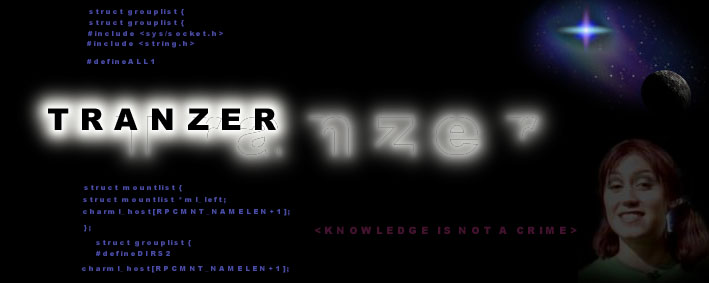

To Sysadm: Nothing was deleted or viewed. This hack is a very lame beacuse of the bad security, someone with computer knowledge could brake in and cause a big damage. So its better that someone show the bad security on this way in staid of delete everything.( Backup of the Index.html file -> backup.html, and the security problem -> sec.txt )